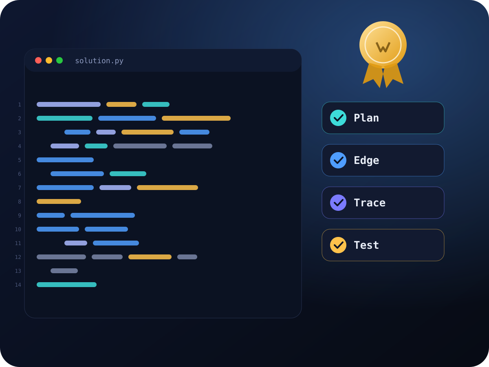

Scores that open doors. A portfolio that gets you in.คะแนนที่เปิดประตู พอร์ตที่พาคุณเข้าไปได้จริง
Preparation for the standard tests that international and Thai universities ask for, plus the projects, essays and interviews that make a portfolio strong.
เตรียมสอบมาตรฐานที่มหาวิทยาลัยนานาชาติและมหาวิทยาลัยไทยกำหนด พร้อมสร้างผลงาน เรียงความ และทักษะสัมภาษณ์ ที่ทำให้พอร์ตโฟลิโอแข็งแรง
- IELTS
- SAT Math
- SAT EBRW
- TBAT
- CU-AAT Math
- CU-AAT Verbal
- Portfolio
Where are you applying?คุณจะยื่นที่ไหน?
Choose a destination to see which tests and courses matter. Every programme sets its own rules, so we confirm the details for your exact list.
เลือกปลายทางเพื่อดูว่าต้องใช้ข้อสอบและหลักสูตรใด แต่ละหลักสูตรมีเกณฑ์ของตนเอง เราจึงช่วยยืนยันรายละเอียดตามรายชื่อหลักสูตรที่คุณเลือก
Six tests, one clear planหกข้อสอบ หนึ่งแผนที่ชัดเจน
Format, scoring and what universities look for. Click a course code for its full outline.
รูปแบบข้อสอบ การให้คะแนน และสิ่งที่มหาวิทยาลัยมองหา คลิกรหัสหลักสูตรเพื่อดูรายละเอียดทั้งหมด
The BMAT is gone. Prepare for the TBAT.BMAT ยกเลิกแล้ว เตรียมสอบ TBAT
Cambridge discontinued the BMAT. Chulalongkorn's medical faculty stopped using it from TCAS68, and Thai international medicine and health programmes now ask for the TBAT (Thai Biomedical Admissions Test): physics, chemistry and biology in English, usually together with CU-AAT or SAT, IELTS, a portfolio and interviews.
Cambridge ยกเลิกการสอบ BMAT แล้ว คณะแพทยศาสตร์ จุฬาฯ เลิกใช้ตั้งแต่ TCAS68 และหลักสูตรนานาชาติด้านแพทย์และสุขภาพในไทยหันมาใช้ TBAT (Thai Biomedical Admissions Test) ซึ่งวัดฟิสิกส์ เคมี และชีววิทยาเป็นภาษาอังกฤษ มักใช้ร่วมกับ CU-AAT หรือ SAT, IELTS พอร์ตโฟลิโอ และการสัมภาษณ์
Some universities accept other tests, such as UCAT or their own exam (for example AKAT at Srinakharinwirot). Tell us your list and we will check what each one requires this year.
บางมหาวิทยาลัยรับข้อสอบอื่น เช่น UCAT หรือข้อสอบของตนเอง (เช่น AKAT ของ มศว) บอกรายชื่อหลักสูตรของคุณ แล้วเราจะตรวจเกณฑ์ของปีนี้ให้

Evidence that builds a stronger portfolioหลักฐานจริงที่สร้างพอร์ตโฟลิโอที่แข็งแรง
Many Thai and international programmes look at the whole person: scores open the door, and projects, writing and interviews decide. DeepDistrict's labs give you the real projects.
หลักสูตรไทยและนานาชาติจำนวนมากพิจารณาตัวตนทั้งหมด คะแนนช่วยเปิดประตู ส่วนผลงาน งานเขียน และการสัมภาษณ์เป็นตัวตัดสิน แล็บของ DeepDistrict ช่วยให้คุณมีผลงานจริง
From diagnostic to acceptanceจากการวัดระดับสู่การได้รับคัดเลือก
Parents see the plan, attendance, mock scores and hours in the DeepDistrict portal.
ผู้ปกครองดูแผน การเข้าเรียน คะแนนสอบจำลอง และชั่วโมงเรียนได้ในระบบ DeepDistrict
A calm timeline from M.4 to M.6ไทม์ไลน์สบาย ๆ จาก ม.4 ถึง ม.6
Starting late is possible: we compress the plan. Test dates and application rounds move every year, so we date your plan from the latest announcements.
เริ่มช้าก็ยังทันได้ เราจะปรับแผนให้กระชับ วันสอบและรอบรับสมัครเปลี่ยนทุกปี เราจึงกำหนดวันในแผนจากประกาศล่าสุด
Seven courses, shaped around youเจ็ดหลักสูตร ปรับตามตัวคุณ
One-to-one or small groups, live online, onsite in Bangkok or hybrid. There are no fixed hours: pace and length follow your starting level and target score.
เรียนตัวต่อตัวหรือกลุ่มเล็ก ออนไลน์สด ที่แล็บกรุงเทพฯ หรือไฮบริด ไม่มีจำนวนชั่วโมงตายตัว ความเร็วและระยะเวลาเป็นไปตามระดับเริ่มต้นและคะแนนเป้าหมายของคุณ

IELTS, SAT, TBAT, CU-AAT, UCAT, BMAT and other test names belong to their owners. DeepDistrict is an independent tutor and is not affiliated with them.
ชื่อ IELTS, SAT, TBAT, CU-AAT, UCAT, BMAT และข้อสอบอื่นเป็นของเจ้าของสิทธิ์แต่ละราย DeepDistrict เป็นสถาบันกวดวิชาอิสระและไม่มีส่วนเกี่ยวข้องกับเจ้าของข้อสอบเหล่านั้น